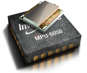
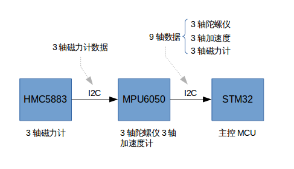

在《飛行控制器——主控MCU》一文的四軸的靈魂——飛控章節中已經提到，飛控是由傳感器部分（即慣性導航模塊，IMU）和控制部分MCU組成。這篇文章我們將重點講講傳感器部分的知識。
四軸飛行器的傳感器就是用來感知飛行器在空中的姿態和運動狀態，這有個專有名詞叫做運動感測追蹤，英文Motion Tracking。在消費電子市場，運動感測技術主要有四種基礎運動傳感器，下面分別說明其進行運動感測追蹤的原理。
加速器可用來感測線性加速度與傾斜角度，單一或多軸加速器可感應結合線性與重力加速度的幅度與方向。含加速器的產品，可提供有限的運動感測功能。例如，含加速器的產品，可在固定方位，感應緃向至橫向的移動，因此，加速器主要使用於與重力方向有關的感測產品中，可提供如將手機的緃向螢慕轉換為橫向等的簡單功能。
陀螺儀是利用高速回轉體的動量矩敏感殼體相對慣性空間繞正交於自轉軸的一個或二個軸的角運動檢測裝置。利用其他原理製成的角運動檢測裝置起同樣功能的也稱陀螺儀。
陀螺儀可感測一軸或多軸的旋轉角速度，可精準感測自由空間中的複雜移動動作，因此，陀螺儀成為追蹤物體移動方位與旋轉動作的必要運動傳感器。不像加速器與電子羅盤，陀螺儀不須藉助任何如重力或磁場等的外在力量，能夠自主性的發揮其功能。
更加詳細的資料，參考MPU6050使用相關的篇章。
電子羅盤也叫數字指南針，磁力計，是利用地磁場來定北極的一種方法。古代稱為羅經，現代利用先進加工工藝生產的磁阻傳感器為羅盤的數字化提供了有力的幫助。現在一般有用磁阻傳感器和磁通門加工而成的電子羅盤。
電子羅盤可藉由地球的磁場來感測前進方向。運用電子羅盤的消費性電子產品應用，包含在手機的地圖應用程序顯示正確方向，或為導航應用程序提供前進方向數據。然而，電子設備或建築材料的磁場干擾，比地球磁場來得強，導致電子羅盤傳感器的輸出值，較容易受到各種環境因素的影響，尤其在室內更是如此，因此，電子羅盤須要透過頻繁的校正，才能維持前進方向數據的準確度。
壓力傳感器又叫做氣壓計，會藉由氣壓的變化來感測物體的相對與絕對高度，常被運用於與運動、健身、方位推測等應用有關的消費性產品中，例如，可感測使用者的移動層樓，調整地圖信息。
微機電系統（MEMS, Micro-Electro-Mechanical System）是一種先進的製造技術平臺。微機電系統是微米大小的機械系統，是以半導體制造技術為基礎發展起來的。
在我們的四軸飛行器上用到的是傳感MEMS分支。傳感MEMS技術是指用微電子微機械加工出來的、用敏感元件如電容、壓電、壓阻、熱電耦、諧振、隧道電流等來感受轉換電信號的器件和系統。
我們使用的加速度陀螺儀MPU6050，電子羅盤HMC5883L都是微機電系統。
Crazepony使用傳感器MPU6050，集成了3軸陀螺儀和3軸加速度傳感器。

關於傳感器的選型，在CamelGo的博客我和Crazepony的那點事兒(2)中有這麼一段描述。
Crazepony採用的是最常用的MPU6050陀螺儀加速度計一體芯片，成本不超過20元，對小四軸來說，它的精度和性能綽綽有餘了（當我聽說教研室師兄用的一顆傳感器裸片賣1W+時，我整個人都不好了..），MPU6050在這個價位裡面幾乎是佔有絕對的性價比優勢。首先，它將陀螺儀和加速計整合在一個片上，通過IIC總線給出六個維度的ADC值；其次，芯片本身提供一個“從”IIC接口，供用戶接第三方的IIC器件，一般選擇是接一個電子羅盤，如HMC5883L,構成一個9軸的輸出的姿態模組,現在MPU9150已經喪心病狂的把電子羅盤功能也整合在片上了,但是要買60+元；最後，這顆芯片內部集成了一個DMP（Digital Motion Processor）處理器，這是最讓我愛不釋手夜不能寐的一個功能,直接硬件解算四元數,從某種程度上說解放了20%的主控資源
在crazepony上，MPU6050,HMC5883傳感器之間的連接如下圖所示。
